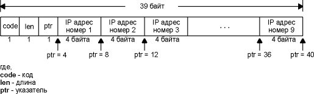
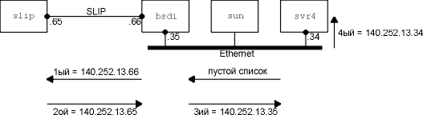

Программа Ping предназначена для проверки доступности удаленного хоста. Программа посылает ICMP эхо запрос на хост и ожидает возврата ICMP эхо отклика. (На рисунке 6.3 приведен список типов ICMP сообщений.)
Обычно, если Вы не можете послать Ping на хост, то не сможете получить доступ к этому хосту, используя Telnet или FTP. С другой стороны, если Вы не можете зайти на хост с помощью Telnet, Ping, как правило, начальная точка, с которой начинается идентификация проблемы. Помимо этого, с помощью Ping можно оценить время возврата пакета от хоста, что дает представление о том, "насколько далеко" находится хост.
В этой главе мы воспользуемся программой Ping в качестве диагностического средства, а также для дальнейшего рассмотрения ICMP. Кроме упомянутого выше, Ping имеет опции записи маршрута и временной марки. Раздел 11 [Stevens 1990] содержит исходные тексты программы Ping.
Раньше можно было считать верным утверждение, что если мы не можем послать Ping на хост, то не сможем работать с хостом и с использованием Telnet или FTP. В настоящее время это утверждение не является верным. Связано это с тем, что в сети Internet появились повышенные требования к секретности. Маршрутизаторы поддерживают списки доступа, появились шлюзы, использующие технологию firewall. В настоящее время доступность хоста основывается не только на доступности IP уровня, а также от того, какой используется протокол и какой при этом работает порт. Ping может показывать хост как недоступный, однако мы можем получить доступ через Telnet на порт 25 (почтовый сервер).
Программа Ping
Мы будем называть программу ping, которая посылает эхо запросы - клиент, а хост, на который посылаются эхо запросы - сервер. Большинство реализаций TCP/IP поддерживают Ping сервер непосредственно в ядре - сервер не является пользовательским процессом. (Два сервиса, работающие с ICMP запросами, которые мы описали в главе 6, маска адреса и запросы временной марки, также обрабатываются непосредственно в ядре.) На рисунке 7.1 показаны ICMP эхо запрос и эхо отклик.

Рисунок 7.1 Формат ICMP сообщения для эхо запроса и эхо отклика.
Так же, как в случае других ICMP запросов, в отклике сервера должены содержаться поля идентификатора (identifier) и номера последовательности (sequence number). Кроме того, любые дополнительные данные, посланные клиентам, должны быть отражены эхом.
Реализации ping, присутствующие в Unix, устанавливают в поле идентификатора ICMP сообщения идентификатор процесса, отправляющего запрос. Это позволяет программе ping идентифицировать вернувшийся ответ, если на одном и том же хосте в одно и то же время запущено несколько программ ping.
Номер последовательности начинается с 0 и увеличивается на единицу каждый раз когда посылается следующий эхо запрос. ping печатает номер последовательности каждого возвращенного пакета, позволяя нам увидеть, потерялся ли пакет, поменялась ли последовательность движения пакетов и был ли пакет продублирован. Так как IP является ненадежным сервисом доставки датаграмм, любое из трех вышеперечисленных условий может появиться при работе программы ping.
Исторически сложилось так, что программа ping посылает эхо запрос один раз в секунду, печатая каждый эхо отклик в момент его возвращения. Однако новые разработки требуют указания опции -s, чтобы программа работала подобным образом. По умолчанию новые реализации посылают только один эхо запрос и выдают сообщение "host is alive" (хост доступен), если эхо отклик получен, или "no answer" (не отвечает), если отклик не получен в течение 20 секунд.
Работа программы в локальных сетях
Вывод программы ping при работе в локальных сетях обычно выглядит следующим образом:
bsdi % ping svr4
PING svr4 (140.252.13.34): 56 data bytes
64 bytes from 140.252.13.34: icmp_seq=0 ttl=255 time=0 ms
64 bytes from 140.252.13.34: icmp_seq=1 ttl=255 time=0 ms
64 bytes from 140.252.13.34: icmp_seq=2 ttl=255 time=0 ms
64 bytes from 140.252.13.34: icmp_seq=3 ttl=255 time=0 ms
64 bytes from 140.252.13.34: icmp_seq=4 ttl=255 time=0 ms
64 bytes from 140.252.13.34: icmp_seq=5 ttl=255 time=0 ms
64 bytes from 140.252.13.34: icmp_seq=6 ttl=255 time=0 ms
64 bytes from 140.252.13.34: icmp_seq=7 ttl=255 time=0 ms
^?
чтобы
остановить ping, вводим символ прерывания
--- svr4 ping statistics ---
8 packets transmitted, 8 packets received, 0% packet loss
round-trip min/avg/max = 0/0/0 ms
Когда принимается ICMP эхо отклик, печатается номер последовательности, затем параметр время жизни (TTL) и рассчитанное время возврата. (TTL это поле времени жизни в IP заголовке. В настоящее время программа ping в BSD печатает полученное TTL каждый раз, когда принимается эхо отклик - некоторые реализации этого не делают. Мы рассмотрим использование TTL в главе 8 с программой traceroute.)
Как видно из примера, приведенного выше, эхо отклики возвращаются в том же порядке, в котором были отправлены (0, 1, 2 и так далее).
ping может рассчитать время возврата, так как он сохраняет время, когда был отправлен эхо запрос, в разделе данных ICMP сообщения. Когда отклик возвращается, эти данные извлекаются и сравниваются с текущим временем. Обратите внимание на то, что посылающая система, bsdi, во всех случаях рассчитала время возврата равное 0 мс. Это объясняется тем, что программе доступен таймер с низким разрешением. Система BSD/386 может использовать только таймер с дискретом 10 мс. (Мы обсудим это более подробно в приложении В.) Позже, с использованием вывода команды tcpdump, мы увидим, что в системах с часами с более высоким разрешением (Sun) разница во времени между ICMP эхо запросом и эхо откликом составляет примерно 4 мс.
Первая строка вывода содержит IP адрес хоста назначения, даже если было указано имя (svr4). Это означает, что имя было преобразовано в IP адрес. Мы рассмотрим процедуру преобразования и DNS в главе 14. После запуска программы ping проходит несколько секунд, перед тем как появляется первая строка вывода с напечатанным IP адресом, это время необходимо DNS, чтобы определить IP адрес, соответствующий имени хоста.
На рисунке 7.2 показан вывод tcpdump для этого примера.
1 0.0
bsdi
> svr4: icmp: echo request
2 0.003733 (0.0037) svr4 > bsdi: icmp: echo reply
3 0.998045 (0.9943) bsdi > svr4: icmp: echo request
4 1.001747 (0.0037) svr4 > bsdi: icmp: echo reply
5 1.997818 (0.9961) bsdi > svr4: icmp: echo request
6 2.001542 (0.0037) svr4 > bsdi: icmp: echo reply
7 2.997610 (0.9961) bsdi > svr4: icmp: echo request
8 3.001311 (0.0037) svr4 > bsdi: icmp: echo reply
9 3.997390 (0.9961) bsdi > svr4: icmp: echo request
10 4.001115 (0.0037) svr4 > bsdi: icmp: echo reply
11 4.997201 (0.9961) bsdi > svr4: icmp: echo request
12 5.000904 (0.0037) svr4 > bsdi: icmp: echo reply
13 5.996977 (0.9961) bsdi > svr4: icmp: echo request
14 6.000708 (0.0037) svr4 > bsdi: icmp: echo reply
15 6.996764 (0.9961) bsdi > svr4: icmp: echo request
16 7.000479 (0.0037) svr4 > bsdi: icmp: echo reply
Рисунок 7.2 Вывод ping при работе в локальной сети.
Время между отправкой эхо запроса и приемом эхо отклика составляет 3,7 мс. Также мы видим, что эхо запросы посылаются с интервалом примерно в 1 секунду.
Часто бывает, что первое время возврата больше чем все остальные. Это происходит в том случае, если аппаратный адрес назначения отсутствует в ARP кэше отправителя. Как мы помним из главы 4, отправка ARP запроса и получение ARP отклика может занять несколько миллисекунд, только после этого отправляется первый эхо запрос. Это проиллюстрировано в следующем примере:
sun % arp -a
убедимся,
что ARP кэш пуст
sun % ping svr4
PING svr4: 56 data bytes
64 bytes from svr4 (140.252.13.34): icmp_seq=0. time=7. ms
64 bytes from svr4 (140.252.13.34): icmp_seq=1. time=4. ms
64 bytes from svr4 (140.252.13.34): icmp_seq=2. time=4. ms
64 bytes from svr4 (140.252.13.34): icmp_seq=3. time=4. ms
^?
вводим
символ прерывания
---- svr4 PING Statistics ----
4 packet transmitted, 4 packets received, 0% packets loss
round-trip (ms) min/avg/max = 4/4/7
Дополнительные 3 миллисекунды в первом RTT скорее всего потрачены на отправку ARP запроса и получение отклика.
Этот пример был запущен на хосте sun, который имеет таймер с разрешением в одну микросекунду, но не смотря на это, программа ping печатает время возврата только с разрешением в одну миллисекунду. В предыдущем примере, запущенном под BSD/386 Version 0.9.4, время возврата равно 0 миллисекунд, так как таймер имеет разрешение в 10 миллисекунд. Следующий вывод получен с использованием BSD/386 Version 1.0, где есть таймер с разрешением в одну микросекунду. Существует версия программы ping, которая имеет более высокое временное разрешение.
bsdi % ping svr4
PING svr4 (140.252.13.34): 56 data bytes
64 bytes from 140.252.13.34: icmp_seq=0 ttl=255 time=9.304 ms
64 bytes from 140.252.13.34: icmp_seq=1 ttl=255 time=6.089 ms
64 bytes from 140.252.13.34: icmp_seq=2 ttl=255 time=6.079 ms
64 bytes from 140.252.13.34: icmp_seq=3 ttl=255 time=6.096 ms
^?
вводим
символ прерывания
--- svr4 ping statistics ---
4 packets transmitted, 4 packets received, 0% packet loss
round-trip min/avg/max = 6.079/6.880/9.304 ms
Работа программы в глобальных сетях
При работе в глобальных сетях результат может значительно отличаться. Следующий пример был получен в рабочий день после полудня, время, когда Internet обычно довольно загружен:
gemini % ping vangogh.cs.berkeley.edu
PING vangogh.cs.berkeley.edu: 56 data bytes
64 bytes from (128.32.130.2): icmp_seq=0. time=660. ms
64 bytes from (128.32.130.2): icmp_seq=5. time=1780. ms
64 bytes from (128.32.130.2): icmp_seq=7. time=380. ms
64 bytes from (128.32.130.2): icmp_seq=8. time=420. ms
64 bytes from (128.32.130.2): icmp_seq=9. time=390. ms
64 bytes from (128.32.130.2): icmp_seq=14. time=110. ms
64 bytes from (128.32.130.2): icmp_seq=15. time=170. ms
64 bytes from (128.32.130.2): icmp_seq=16. time=100. ms
^?
вводим
символ прерывания
---- vangogh.CS.Berkeley.EDU PING Statistics ----
17 packets transmitted, 8 packets received, 52% packet loss
round-trip (ms) min/avg/max = 100/501/1780
Эхо запросы и эхо отклики с номерами последовательности 1, 2, 3, 4, 6, 10, 11, 12 и 13 были потеряны. Также обратите внимание на значительную разницу между величинами времен возврата. (Количество потерянных пакетов, а именно 52%, является ненормальным. Это неприемлимо для Internet даже в рабочие дни после полудня.)
При работе в глобальных сетях можно встретиться с дублированием пакетов (один и тот же номер последовательности появляется дважды или несколько раз), также может возникнуть перемешивание номеров последовательности (номер последовательности N+1 появляется перед номером последовательности N).
Давайте рассмотрим время возврата при работе по SLIP каналам, так как они обычно работают в асинхронном режиме с низкими скоростями, например 9600 бит/сек или меньше. Обратимся к расчету пропускной способности последовательной линии, приведенному в разделе "Вычисление загруженности последовательной линии" главы 2. Предположим, скорость SLIP канала между хостами bsdi и slip составляет 1200 бит/сек.
Оценить время возврата можно следующим образом. Во-первых, обратимся к примеру вывода Ping, показанному ранее. По умолчанию, ICMP сообщение содержит 56 байт данных. А также, 20 байт IP заголовка и 8 байт ICMP заголовка, что в сумме дает размер IP датаграммы - 84 байта. (Мы можем проверить это, запустив tcpdump -e, с помощью этой опции можно посмотреть размеры Ethernet фреймов.) Из раздела "SLIP: IP по последовательной линии" главы 2 мы знаем, что в начало и в конец датаграммы добавляется по меньшей мере два дополнительных байта, а именно - байт END. Не исключено, что при создании фреймов SLIP будут добавлены дополнительные байты, однако это зависит от величины каждого байта в датаграмме. Предположим, что скорость составляет 1200 бит/сек, в байте 8 бит, один старт-бит и один стоп-бит, при этом скорость будет 120 байт/сек или 8,33 мс на один байт. Время возврата составит (86 x 8,33 x 2) или 1433 мс. (Здесь умножается на 2 потому, что мы рассчитываем время возврата - то есть время, за которое пакет ушел и вернулся.)
Следующий вывод должен подтвердить правильность наших вычислений:
svr4 % ping -s slip
PING slip: 56 data bytes
64 bytes from (192.42.62.1): icmp_seq=0. time=1480. ms
64 bytes from (192.42.62.1): icmp_seq=1. time=1480. ms
64 bytes from (192.42.62.1): icmp_seq=2. time=1480. ms
64 bytes from (192.42.62.1): icmp_seq=3. time=1480. ms
^?
---- slip PING Statistics ----
5 packets transmitted, 4 packets received, 20% packet loss
round-trip (ms) min/avg/max = 1480/1480/1480
(Опция -s необходима для SVR4, чтобы посылать один запрос каждую секунду.) Время возврата составляет почти 1,5 секунды, однако программа все еще посылает ICMP эхо запросы с интервалом в 1 секунду. Это означает, что будет выдано два эхо запроса (в момент времени 0 и в момент времени 1), перед тем как вернется первый отклик (момент времени 1,480). Именно поэтому программа считает, что один пакет потерян. В действительности он не был потерян, скорее всего он еще просто не вернулся.
Мы снова обратимся к медленному SLIP каналу в главе 8, когда будем рассматривать работу программы traceroute.
SLIP каналы с дозвоном (Dialup)
При использовании SLIP каналов с дозвоном существуют некоторые отличия, так как на каждом конце канала присутствуют модемы. Модемы, которые используются между системами netb и sun, предоставляют то, что называется модуляцией V.32 (9600 бит/сек), контроль ошибок V.42 (также иногда называемый LAP-M) и сжатие данных V.42bis. Это означает, что наши простые вычисления, которые были достаточно точны для выделенного канала, где известны все параметры, в таких условиях практически неверны.
В данном случае играют роль несколько фактов. Модемы вносят некоторую задержку. Размер пакета может быть уменьшен благодаря сжатию данных, однако размер может быть и увеличен, так как используется протокол контроля ошибок. В дополнение, принимающий модем не может выдать полученные байты данных до тех пор, пока не будет проверена контрольная сумма. И в завершение, на каждом конце используется последовательный асинхронный интерфейс компьютера, а большинство операционных систем читают эти интерфейсы через определенный интервал времени или после того, как было получено определенное количество символов.
В следующем примере мы послали ping на хост gemini с хоста sun.
sun % ping gemini
PING gemini: 56 data bytes
64 bytes from gemini (140.252.1.11): icmp_seq=0. time=373. ms
64 bytes from gemini (140.252.1.11): icmp_seq=1. time=360. ms
64 bytes from gemini (140.252.1.11): icmp_seq=2. time=340. ms
64 bytes from gemini (140.252.1.11): icmp_seq=3. time=320. ms
64 bytes from gemini (140.252.1.11): icmp_seq=4. time=330. ms
64 bytes from gemini (140.252.1.11): icmp_seq=5. time=310. ms
64 bytes from gemini (140.252.1.11): icmp_seq=6. time=290. ms
64 bytes from gemini (140.252.1.11): icmp_seq=7. time=300. ms
64 bytes from gemini (140.252.1.11): icmp_seq=8. time=280. ms
64 bytes from gemini (140.252.1.11): icmp_seq=9. time=290. ms
64 bytes from gemini (140.252.1.11): icmp_seq=10. time=300. ms
64 bytes from gemini (140.252.1.11): icmp_seq=11. time=280. ms
----gemini PING Statistics----
12 packets transmitted, 12 packets received, 0% packet loss
round-trip (ms) min/avg/max = 280/314/373
Обратите внимание на то, что в первой строке RTT не кратен 10 миллисекундам, однако в остальных строках значение RTT кратно 10 миллисекундам. Если запустить этот пример несколько раз, то можно заметить, что подобное поведение сохранится. (Это вызвано точностью часов хоста sun - они предоставляют разрешение в одну миллисекунду. Это было проверено тестами, которые приведены в приложении В.)
Также обратите внимание на то, что первый RTT больше чем следующие, а остальные уменьшаются в процессе работы команды и их диапазон находится между 280 и 300 мс. Если не останавливать программу примерно минуту или две, RTT останутся в этом диапазоне, никогда не уменьшаясь меньше чем 260 мс. Если рассчитать ожидаемый RTT для скорости 9600 бит/сек (упражнение 2 главы 7), величина составит 180 миллисекунд, таким образом мы ошиблись в расчете примерно в 1,5 раза от реального значения.
Если программа ping будет работать в течение 60 секунд, то среднее RTT при использовании V.42 и V.42bis составит 277 миллисекунд. (Это лучше, чем значение, полученное в предыдущем примере, так как программа работала долше, при этом значение RTT застабилизировались в определенном диапазоне.) Если выключить сжатие данных V.42bis, то среднее значение составит 330 миллисекунд. Если выключить контроль ошибок V.42 (который также выключается при выключении сжатия данных V.42bis), среднее значение составит 300 миллисекунд. Эти параметры модемов влияют на RTT, однако все же лучше использовать контроль ошибкок и сжатие данных.
Программа ping предоставляет возможность просмотреть IP опцию записи маршрута (RR). В большинстве версий программы ping присутствует опция -R, которая включает характеристику записи маршрута. При использовании этой опции ping устанавливает опцию IP записи маршрута (RR) в исходящих датаграммах (которые содержат ICMP эхо запрос). При этом каждый маршрутизатор, который обрабатывает датаграмму, добавляет свой IP адрес в список, находящийся в дополнительном поле. Когда датаграмма достигает конечного пункта назначения, список IP адресов копируется в исходящий ICMP эхо отклик, а все маршрутизаторы на обратном пути также добавляют свои IP адреса в список. Когда ping принимает эхо отклик, печатает список IP адресов.
Как бы просто это не звучало, в действительности, запись маршрута - достаточно сложный процесс. Генерация IP опции RR хостом источником, обработка опции RR промежуточными маршрутизаторами и отражение входящего списка RR из ICMP эхо запроса в исходящий ICMP эхо отклик все это дополнительные и необязательные характеристики. Большинство систем в настоящее время поддерживают эти дополнительные характеристики, однако некоторые системы не отображают список IP адресов.
Самая большая проблема, однако, заключается в ограниченном размере IP заголовка, в который должен поместиться список IP адресов. Из рисунка 3.1 видно, что поле длины заголовка (header length) в IP заголовке составляет 4 бита, что ограничивает размер IP заголовка в пределах пятнадцати 32-битных слов (60 байт). Так как фиксированный размер IP заголовка составляет 20 байт, а RR опция использует 3 байта для своей установки (что мы опишем ниже), то остается 37 байт (60-20-3) на список адресов, а это, в свою очередь, позволяет поместить туда до 9 IP адресов. На заре развития ARPANET 9 IP адресов - было очень много, однако, в настоящее время, подобный размер существенно ограничивает работу команды ping с опцией -R. (В главе 8 мы рассмотрим программу Traceroute, которая используется для отслеживания маршрута, по которому двигается датаграмма.) Несмотря на все ограничения, опция записи маршрута работает и предоставляет возможность пронаблюдать, как обрабатываются опции IP. На рисунке 7.3 показан общий формат опции записи маршрута в IP датаграмме.

Рисунок 7.3 Общий формат опции маршрута в IP заголовке.
Код (code) - однобайтовое поле, содержащее тип IP опции. Для опции RR установлено значение 7. Длина (len) - это полный размер в байтах опции RR, в данном случае 39. (Несмотря на то, что существует возможность указать опцию RR с размером меньше максимального, ping всегда предоставляет поле опции размером 39 байт, что позволяет записать до 9 IP адресов. Несмотря на то, что существует ограничение в размере опций в IP заголовке, оно, тем не менее, позволяет указать размер меньше максимального.)
Указатель (ptr) - это индекс в 39-байтной опции, который указывает на то, где хранится следующий IP адрес. Его минимальное значение 4, что указывает на первый IP адрес. Когда следующий IP адрес записывается в список, значение ptr меняется следующим образом: 8, 12, 16 и так до 36. После того как записан девятый адрес, ptr устанавливается в значение 40, указывая на то, что список полон. А теперь давайте зададим себе такой вопрос.
Когда маршрутизатор (который по определению имеет несколько интерфейсов) записывает свой IP адрес в список, какой IP адрес он записывает? Это должен быть адрес либо входящего интерфейса, либо исходящего. RFC 791 [Postel 1981a] указывает, что маршрутизатор записывает IP адрес исходящего интерфейса. Однако, мы увидим, что когда исходный хост (хост, запустивший ping) получает ICMP эхо отклик с включенной опцией RR, он вносит в список IP адрес своего входящего интерфейса.
Обычный пример
Давайте попробуем запустить программу ping с опцией RR. Мы запустили ping с хоста svr4 на хост slip. Промежуточный роутер (bsdi) обрабатывает датаграмму, следующий вывод будет получен от svr4:
svr4 % ping -R slip
PING slip (140.252.13.65): 56 data bytes
64 bytes from 140.252.13.65: icmp_seq=0 ttl=254 time=280 ms
RR: bsdi (140.252.13.66)
slip (140.252.13.65)
bsdi (140.252.13.35)
svr4 (140.252.13.34)
64 bytes from 140.252.13.65: icmp_seq=1 ttl=254 time=280 ms (same route)
64 bytes from 140.252.13.65: icmp_seq=2 ttl=254 time=280 ms (same route)
^?
--- slip ping statistics ---
3 packets transmitted, 3 packets received, 0% packet loss
round-trip min/avg/max = 270/276/280 ms
На рисунке 7.4 показаны 4 пересылки, через которые проходит пакет (по две в каждом направлении), а также IP адреса добавляемые к списку RR при каждой пересылке.

Рисунок 7.4 Программа ping с опцией записи маршрутизации.
Маршрутизатор bsdi добавляет в список разные IP адреса в зависимости от направления движения датаграммы. Он всегда добавляет IP адрес исходящего интерфейса. Однако, когда ICMP эхо отклик достигает системы, которая инициировала запрос (svr4), она добавляет в список IP адрес входящего интерфейса.
Мы можем наблюдать за обменом пакетами с хоста sun, на котором запущена программа tcpdump с опцией -v (просмотр IP опций). На рисунке 7.5 показан вывод.
1 0.0
svr4>slip:
icmp: echo request (ttl 32, id 35835,
optlen=40
RR{39}=RR{#0.0.0.0/0.0.0.0/0.0.0.0/
0.0.0.0/0.0.0.0/0.0.0.0/0.0.0.0/0.0.0.0/0.0.0.0}
EOL)
2 0.267746 (0.2677) slip>svr4: icmp: echo reply (ttl 254, id
1976,
optlen=40
RR{39}=RR{140.252.13.66/140.252.13.65/
140.252.13.35/#0.0.0.0/0.0.0.0/0.0.0.0/0.0.0.0/
0.0.0.0/0.0.0.0} EOL)
Рисунок 7.5 Вывод программы tcpdump c записью опций маршрутизации.
Вывод optlen=40 указывает на то, что пространство опций в IP заголовке, используемое в данном случае, равно 40 байтам. (Обратите внимание, длина IP заголовка должна быть кратна 4 байтам.) RR {39} означает, что включена опция записи маршрута, а длина ее поля составляет 39. Затем приводится список из 9 IP адресов, знак (#) показывает на который из IP адресов указывает поле ptr в заголовке опции RR. Так как мы наблюдали за пакетами с хоста sun (см. рисунок 7.4), то видели только ICMP эхо запросы с пустым списком и ICMP эхо отклики, в списке которых содержится 3 адреса. Мы удалили оставшиеся строки в выводе tcpdump, так как они практически идентичны тем, которые показаны на рисунке 7.5.
Комбинация EOL в конце записи маршрута указывает на IP опцию "конец списка" (end of list). Опция EOL имеет значение 0. В поле опций IP заголовка, состоящего из 40 байт присутствует 39 байт данных RR. Так как пространство опций устанавливается в 0, перед тем как датаграмма отсылается, последний байт 0 следующий за 39-ю байтами данных RR интерпретируется как EOL. Если в поле опций IP заголовка присутствует несколько опций и появляется необходимость использовать байты заполнения перед началом следующей опции, используется специальный символ "нет операции" (NOP - no operation), значение которого равно единице.
На рисунке 7.5 SVR4 устанавливает в поле TTL в эхо запросе значение 32, а BSD/386 устанавливает значение 255. (Это значение печатается как 254, потому что маршрутизатор bsdi уже успел уменьшить это значение на единицу.) Все новые системы устанавливают TTL ICMP сообщений по максимуму (255).
Необходимо отметить, что две системы, BSD/386 и SVR4, из трех TCP/IP реализаций, описываемых в качестве примера в этой книге, поддерживают опцию записи маршрута. Таким образом, они корректно обновляют RR список при перенаправлении датаграммы. Также они корректно отражают RR список из входящих ICMP эхо запросов в исходящий ICMP эхо отклик. SunOS 4.1.3, однако, обновляет RR список, когда перенаправляет датаграмму, но не отображает RR список. Solaris 2.x исправляет эту проблему.
Ненормальный вывод
Следующий пример был рассмотрен автором и является исходной точкой для дальнейшего описания ICMP сообщений о перенаправлении в главе 9. Мы посылаем ping на хост aix, находящийся в подсети 140.252.1, с хоста slip (доступ осуществляется через SLIP соединение с дозвоном на компьютере sun) с опцией записи маршрута. При этом получаем следующий вывод:
slip % ping -R aix
PING aix (140.252.1.92): 56 data bytes
64 bytes from 140.252.1.92: icmp_seq=0 ttl=251 time=650 ms
RR: bsdi (140.252.13.35)
sun (140.252.1.29)
netb (140.252.1.183)
aix (140.252.1.92)
gateway (140.252.1.4)
почему используется
этот маршрутизатор?
netb (140.252.1.183)
sun (140.252.13.33)
bsdi (140.252.13.66)
slip (140.252.13.65)
64 bytes from aix: icmp_seq=1 ttl=251 time=610 ms (same route)
64 bytes from aix: icmp_seq=2 ttl=251 time=600 ms (same route)
^?
--- aix ping statistics ---
4 packets transmitted, 3 packets recieved, 25% packet loss
round-trip min/avg/max = 600/620/650 ms
Мы могли бы запустить этот пример с хоста bsdi, но выбрали хост slip, чтобы увидеть все 9 IP адресов, которые появятся в списке RR.
Странность этого вывода заключается в том, что исходящая датаграмма (ICMP эхо запрос) направляется непосредственно от netb к aix, а возвращается (ICMP эхо отклик) от aix через маршрутизатор gateway, перед тем как попасть в netb. То что мы видим здесь, является характеристикой IP маршрутизации, которую мы опишем ниже. На рисунке 7.6 показан путь датаграммы.

Рисунок 7.6 Работа программы ping с записью маршрута, показывающая характеристику IP маршрутизации.
Проблема заключается в том, что aix не знает как послать IP датаграмму, направляющуюся в подсеть 140.252.13 к netb. Однако, aix имеет в своей таблице маршрутизации пункт по умолчанию, который сообщает о необходимости посылать все датаграммы на маршрутизатор gateway, если не существует конкретного маршрута к пункту назначения. Маршрутизатор gateway знает значительно больше о существующих маршрутах, чем любой другой хост в подсети 140.252.1. (В этой сети Ethernet присутствует более чем 150 хостов, и вместо того чтобы каждому иметь запущенный демон маршрутизации, они используют пункт "по умолчанию" (default), который указывает на маршрутизатор gateway.)
Вопрос, на который пока нет ответа, заключается в том, почему gateway не послал сообщение ICMP о перенаправлении (глава 9, раздел "ICMP ошибки перенаправления") на aix, чтобы обновить его таблицу маршрутизации? По некоторым причинам (возможно потому, что датаграмма, генерирующая перенаправление, является ICMP эхо запросом) перенаправление не произошло. Однако, если мы используем Telnet и подключимся к серверу дневного времени на aix, ICMP перенаправление произойдет, и таблица маршрутизации aix будет обновлена. Если мы затем запустим ping со включенной опцией записи маршрута, маршрут покажет, что датаграммы идут от netb к aix и назад к netb без дополнительной пересылки через маршрутизатор gateway. Мы рассмотрим сообщения ICMP о перенаправлении более подробно в разделе "ICMP ошибки перенаправления" главы 9.
Опция IP временной марки во многом напоминает опцию записи маршрута. На рисунке 7.7 показан формат IP опции временной марки (сравните с рисунком 7.3).

Рисунок 7.7 Общий формат опции временной марки в IP заголовке.
Для опции временной марки поле кода (code) устанавливается в 0x44. Два поля длина (len) и указатель (ptr) такие же как в опции записи маршрута: полная длина опции (обычно 36 или 40) и указатель на следующий доступный пункт (5, 9, 13 и так далее).
Размер двух следующих полей составляет 4 бита: OF - поле переполнения (overflow) и FL - поле флагов (flags). Функционирование опции временной марки определяется полем флагов (flags), как показано на рисунке 7.8.
флаги (flags) |
Описание |
0 |
Запись только временных марок. Это как раз то, что мы показали на рисунке 7.7. |
1 |
Каждый маршрутизатор записывает свой IP адрес и временную марку. Места в списке опций хватает только на четыре такие пары. |
3 |
Отправитель устанавливает список опций, который должен состоять из 4-х пар IP адресов 0 (ноль) временных марок. Маршрутизатор записывает свою временную марку только в том случае, если следующий IP адрес из списка совпадает с IP адресом маршрутизатора. |
Рисунок 7.8 Значение флагов в опции временной марки.
В случае если маршрутизатор не может добавить временную марку, из-за того что не хватает места, он увеличивает на единицу поле переполнения (overflow).
Обычное значение для временной марки это количество миллисекунд после полуночи, UTC, что напоминает запрос и отклик временной марки ICMP (глава 6, раздел "ICMP запрос и отклик временной марки"). Если маршрутизатор не поддерживает подобный стандарт, он может вставить то представление времени, которое он использует, однако затем он должен установить в единицу старшие биты временной марки, чтобы указать на нестандартный формат.
Заданные ограничения, которые мы рассматривали с опцией записи маршрута, с опцией временной марки становятся еще более жесткими. Если осуществляется запись и IP адресов и временных марок (флаги установлены в единицу), то можно сохранить только 4 подобные пары. Сохранение только временной марки практически бесполезно, потому что мы не имеем представления, какому маршрутизатору соответствует определенная временная марка (если только мы не имеет фиксированную топологию, которая никогда не изменяется). Если установить флаги в значение 3, то появится возможность выбрать, каким маршрутизаторам необходимо вставлять их временные марки. Более глобальная проблема заключается в том, что мы не можем контролировать то, насколько точно маршрутизаторы устанавливают временные марки. Поэтому довольно сложно оценить время пересылки между маршрутизаторами с использованием этой IP опции. Вскоре мы увидим, что программа traceroute (см. главу 8) предоставляет более совершенный способ оценки времени пересылки между маршрутизаторами.
Программа ping является основным тестирующим средством, которое позволяет определить наличие соединения между системами, использующими TCP/IP. Она использует ICMP эхо запрос и эхо отклик и не использует транспортные уровни (TCP или UDP). Ping сервер обычно является частью реализации ядра ICMP.
Мы рассмотрели стандартный вывод команды ping для локальных, глобальных сетей и каналов SLIP (с дозвоном и выделенных), и рассчитали пропускную способность последовательных линий выделенных SLIP каналов. ping также позволяет использовать IP опцию записи маршрута. Мы использовали эту IP опцию, чтобы посмотреть как используется маршрут по умолчанию. Мы вернемся к этой теме в главе 9. Также мы рассмотрели IP опцию временной марки, однако она имеет ограниченную практическую ценность.